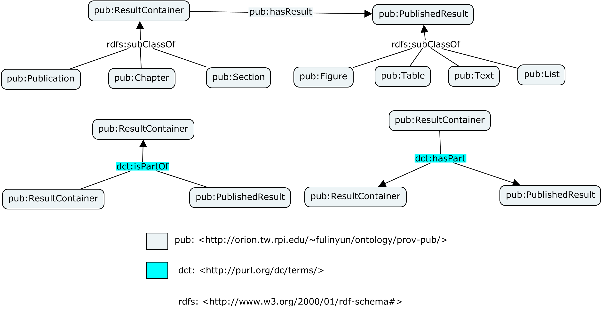
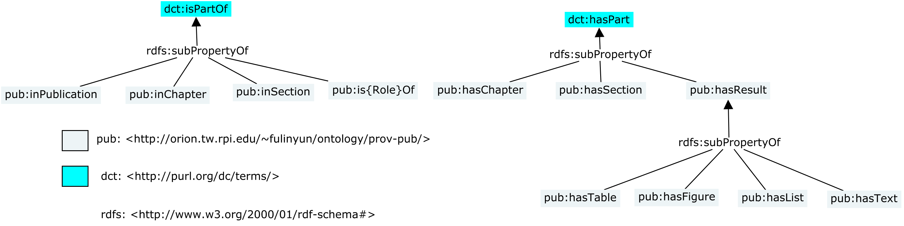

Figure 1. Classes in PROV-PUB-O/S

Figure 2. Properties in PROV-PUB-O/S, pub:is{Role}Of represents the role indicating properties such as pub:isIntroductionOf, pub:isAbstractOf, etc.
PROV-PUB-O/S is a lightweight ontology designed to describe the locations of published results such as figures, tables, lists and textually described results within the structural elements of a research publication. The ontology design follows the following principles:
To follow the principle of minialism on classes, only definitely necessary classes are defined. Two types of classes are considered definitely necessary. The first type is containers to contain published results, such as publication, chapter and section; the second type is published results such as figure, table, list and textually described result.
To follow the principle of rich on properties, multiple ways of expressing part-whole and result-container relations are given. In addition to the general dcterms:isPartOf and dcterms:hasPart properties, we define properties that are specific on their ranges such as pub:inPublication, pub:inChapter, pub:inSection, pub:hasChapter, pub:hasSection, pub:hasFigure, pub:hasTable, pub:hasList and pub:hasText. Also defined are properties with role indications such as pub:isAbstractOf, pub:isIntroductionOf, pub:isDiscussionOf, pub:isRelatedWorkOf, pub:isConclusionOf and pub:isAcknowledgementsOf. In the comment (rdfs:comment) field of each class, sample usage of these properties are given in the "Examples" sections. The idea is not to make the users use all of them on each instance, but to let the users choose a most comfortable way and adhere to the chosen scheme of representing relations. For example, it may be decided that only pub:hasChapter, pub:hasSection, pub:hasFigure, pub:hasTable, pub:hasList and pub:hasText are allowed to use in a certain knowledge base, other properties such as pub:inPublication, pub:inChapter and pub:inSection are forbidden to ensure some prepared SPARQL queries to work properly.
To follow the principle of leaving the decision for dependencies to the users, subclassing and double-classing suggestions are given for each class in PROV-PUB-O/S in case the user of the ontology wants to reuse the classes and constraints defined in the related ontologies. Subclassing means to assert that a class in PROV-PUB-O/S is a subclass of a class in one of the related ontologies. For example, the user could optionally assert that pub:Chapter is a subclass of doco:Chapter to make every instance of pub:Chapter automatically also an instance of doco:Chapter. Double-classing means to assert that an instance of a PROV-PUB-O/S class is also an instance of another class in a related ontology. For example, an instance can be asserted as both a pub:Publication and a bibo:Document. Such suggestions indicate that the assertions are expected by the creator of the ontology but not forced.
To give subclassing suggestions, three bridging ontologies <http://orion.tw.rpi.edu/~fulinyun/ontology/prov-pub/prov-pub-s-doco.ttl>, <http://orion.tw.rpi.edu/~fulinyun/ontology/prov-pub/prov-pub-s-bibtex.ttl> and <http://orion.tw.rpi.edu/~fulinyun/ontology/prov-pub/prov-pub-s-bibo.ttl> are provided in case a user wants to accept all the suggested subclassing links from PROV-PUB-O/S to one of its related ontologies. Each bridging ontology is exclusively composed of assertions of the form "pub:ClassX rdfs:subClassOf ontologyY:ClassZ" such as "pub:Chapter rdfs:subClassOf doco:Chapter".
Double-classing suggestions are given in the "Examples" section inside comments (rdfs:comment) of each class, since they cannot be encoded in the form of bridging ontologies because they do not require any assertion at the schema level.
IRI: http://orion.tw.rpi.edu/~fulinyun/ontology/prov-pub/ResultContainer
IRI: http://orion.tw.rpi.edu/~fulinyun/ontology/prov-pub/Publication
The research publication class represents those things which are broadly conceived "research publications".
Consider asserting pub:Publication's also instances of bibtex:Entry or one of its subclasses to specify BibTeX entry type, or asserting them instances of bibo:Document or one of its subclasses to specify document type.
Consider asserting pub:Publication to be a subclass of bibtex:Entry and/or bibo:Document to make every pub:Publication instance automatically also an instance of bibtex:Entry and/or bibo:Document.
Examples:
@prefix : <http://example.org/>
:publication1 a pub:Publication, bibtex:Article, bibo:Document;
bibtex:hasTitle "..."; # this and the following triples are asserted to satisfy constraints on bibtex:Article
bibtex:hasYear "2015"^^xsd:nonNegativeInteger;
bibtex:hasJournal "...";
bibtex:hasAuthor "...".
IRI: http://orion.tw.rpi.edu/~fulinyun/ontology/prov-pub/Chapter
The Chapter class represents chapters in research publications. A chapter is usually identified by a (numerical) label (with rdfs:label) and/or a caption (with pub:caption). An example of a label for a chapter is This class can be used with doco:Chapter through subclassing or double-classing. By asserting pub:Chapter to be a subclass of doco:Chapter (subclassing), instances of pub:Chapter are automatically also instances of doco:Chapter. Instances of pub:Chapter can be asserted to be also instances of doco:Chapter, one at a time (double-classing).
Examples:
@prefix : <http://example.org/>
:chapter4 a pub:Chapter, doco:Chapter;
rdfs:label "Chapter 4";
pub:caption "Energy Supply and Use";
pub:inPublication :publication2; # this chapter is in a publication
pub:hasSection :section1; # it has a section in it
pub:hasFigure :figure1; # it has a figure in it
pub:hasTable :table1; # it has a table in it
pattern:contains :paragraph1. # use a property in DoCO to reach down to the paragraph level
IRI: http://orion.tw.rpi.edu/~fulinyun/ontology/prov-pub/Section
This class represents sections and can be used with doco:Section through subclassing or double classing. By asserting pub:Section to be a subclass of doco:Section (subclassing), instances of pub:Section are automatically also instances of doco:Section. Instances of pub:Section can be asserted to be also instances of doco:Section, one at a time (double-classing).
Examples:
@prefix : <http://example.org/>
:section1 a pub:Section, doco:Section;
rdfs:label "Section 4.1";
pub:caption "Disruptions from Extreme Weather";
pub:inPublication :publication1; # this section is in a publication
pub:inChapter :chapter4; # this section is in a chapter
pub:hasSection :section1_1; # it has a subsection
pub:hasFigure :figure1; # it has a figure in it
pub:hasTable :table1; # it has a table in it
pattern:contains :paragraph1. # use a property in DoCO to reach down to the paragraph level
IRI: http://orion.tw.rpi.edu/~fulinyun/ontology/prov-pub/PublishedResult
This class represents published results including figures, tables, lists and textual descriptions. Subclasses of this class are expected to be defined by users to support more kinds of published results. The property pub:hasResult can be used on pub:ResultContainer instances to locate data products.
IRI: http://orion.tw.rpi.edu/~fulinyun/ontology/prov-pub/Figure
Figures are usually identified by their labels and captions, i.e., rdfs:label and pub:caption property values. An example of a label for a figure is "Figure 4.1", and an example of a caption for a figure is "Paths of Hurricanes Katrina and Rita Relative to Oil and Gas Production Facilities". If used together with doco:Figure, note that a doco:Figure cannot be contained (described with pattern:contains) by doco:Section or doco:Chapter. In this ontology, pub:hasFigure, pub:inSection, pub:inChapter and pub:inPublication can be used with pub:Publication, pub:Chapter and pub:Section instances to locate figures.
Examples:
@prefix : <http://example.org/>
:figure1 a pub:Figure; # Benefit of double-classing with doco:Figure is unclear, so no double-classing here.
rdfs:label "Figure 4.1";
pub:caption "Paths of Hurricanes Katrina and Rita Relative to Oil and Gas Production Facilities";
pub:inSection :section1; # the figure is in a section
pub:inChapter :chapter4; # the figure is in a chapter
pub:inPublication :publication1. # the figure is in a publication
IRI: http://orion.tw.rpi.edu/~fulinyun/ontology/prov-pub/Table
Tables are usually identified by their labels and captions, i.e., rdfs:label and pub:caption property values. An example of a label for a table is "Table 4.1", and an example of a caption for a table is "Changing Energy Use for Heating and Cooling Will Vary by Region". If used together with doco:Table, note that a doco:Table cannot be contained (described with pattern:contains) by doco:Section or doco:Chapter. In this ontology, pub:hasTable, pub:inSection, pub:inChapter and pub:inPublication can be used on pub:Publication, pub:Chapter and pub:Section instances to locate tables.
Examples:
@prefix : <http://example.org/>
:table1 a pub:Table; # No double-classing with doco:Table here because the benefit is unclear.
rdfs:label "Table 4.1";
pub:caption "Changing Energy Use for Heating and Cooling Will Vary by Region";
pub:inSection :section1; # the table is in a section
pub:inChapter :chapter4; # it is in a chapter
pub:inPublication :publication1. # it is in a publication
IRI: http://orion.tw.rpi.edu/~fulinyun/ontology/prov-pub/List
Unlike figures and tables, lists may not have labels and captions to identify them. It is recommended to use the rdfs:label property to give location information. In this ontology, pub:hasList, pub:inSection, pub:inChapter and pub:inPublication can be used on the proper pub:ResultContainer instances to locate lists.
Examples:
@prefix : <http://example.org/>
:list1 a pub:List;
rdfs:label "The list at the beginning of Chapter 4"; # give location information to help identify the list
pub:inChapter :chapter4; # the list is in a chapter
pub:inPublication :publication1. # it is in a publication
IRI: http://orion.tw.rpi.edu/~fulinyun/ontology/prov-pub/Text
Results of this kind usually do not have labels and captions to identify. It is recommended to use the rdfs:label property to give location information. In this ontology, pub:hasText, pub:inSection, pub:inChapter and pub:inPublication can be used on the proper pub:ResultContainer instances to locate textually described results.
Examples:
@prefix : <http://example.org/>
:text1 a pub:Text;
rdfs:label "The sentence in the last paragraph of page 115 saying that coal produced 42% of U.S. electricity in 2011";
pub:inSection :section1; # the text is found in a section
pub:inChapter :chapter4; # it is in a chapter
pub:inPublication :publication1. # it is in a publication
IRI: http://orion.tw.rpi.edu/~fulinyun/ontology/prov-pub/hasChapter
Used to describe that a publication or something else has a chapter as a part. Large publications may have larger parts on top of chapters, so the domain of this property is left unspecified.
IRI: http://orion.tw.rpi.edu/~fulinyun/ontology/prov-pub/hasFigure
This property represents the fact that a result container (such as a publication, a chapter or a section) contains a figure.
IRI: http://orion.tw.rpi.edu/~fulinyun/ontology/prov-pub/hasList
This property represents the fact that a result container (such as a publication, a chapter or a section) contains a published result represented in the form of a list.
IRI: http://orion.tw.rpi.edu/~fulinyun/ontology/prov-pub/hasResult
The top property representing the relation between a result container (such as a publication, a chapter or a section) and a published result (such as a figure or a table) it contains.
IRI: http://orion.tw.rpi.edu/~fulinyun/ontology/prov-pub/hasSection
Used to describe something has a section as a part. A section can be a part of another section (itself being a subsection), a chapter, a publication or an element not defined in this ontology, so the domain of this property is left unspecified.
IRI: http://orion.tw.rpi.edu/~fulinyun/ontology/prov-pub/hasTable
This property represents the fact that a result container (such as a publication, a chapter or a section) contains a table.
IRI: http://orion.tw.rpi.edu/~fulinyun/ontology/prov-pub/hasText
This property represents the fact that a result container (such as a publication, a chapter or a section) contains a textually described result.
IRI: http://orion.tw.rpi.edu/~fulinyun/ontology/prov-pub/isAbstractOf
This property is introduced to replace the sro:Abstract class for the same reason as the replacement of deo:Introduction with pub:isIntroductionOf. Unlike some other classes such as sro:Background and sro:Conclusion, sro:Abstract does not have an equivalent class in DEO. The subject of this property is usually a pub:Section, but we are not a hundred percent sure whether it can be something else; the object of the property is usually a pub:Publication, but again we are not sure, so the domain and range of pub:isAbstractOf are both left unspecified.
IRI: http://orion.tw.rpi.edu/~fulinyun/ontology/prov-pub/isAcknowledgementsOf
This property is introduced to replace the deo:Acknowledgements class for the same reason as the replacement of deo:Introduction with pub:isIntroductionOf, and the remarks for pub:isIntroductionOf in terms of domain and range applies to this property as well. i.e., pub:isAcknowledgementsOf usually represents a chapter-publication or section-chapter relation.
IRI: http://orion.tw.rpi.edu/~fulinyun/ontology/prov-pub/isAppendixOf
This property is introduced to replace the doco:Appendix class for the same reason as the replacement of deo:Introduction with pub:isIntroductionOf, and the remarks for pub:isIntroductionOf in terms of domain and range applies to this property as well. i.e., pub:isAppendixOf usually represents a chapter-publication or section-chapter relation.
IRI: http://orion.tw.rpi.edu/~fulinyun/ontology/prov-pub/isBackgroundOf
This property is introduced to replace the deo:Background class for the same reason as the replacement of deo:Introduction with pub:isIntroductionOf. The subject of this property is usually a pub:Chapter, and the object usually a pub:Publication, but we are not sure whether they can be something else, so the domain and range are both left unspecified.
IRI: http://orion.tw.rpi.edu/~fulinyun/ontology/prov-pub/isConclusionOf
This property is introduced to replace the deo:Conclusion class for the same reason as the replacement of deo:Introduction with pub:isIntroductionOf, and the remarks for pub:isBackgroundOf in terms of domain and range applies to this property as well. i.e., pub:isConclusionOf usually represents a chapter-publication relation.
IRI: http://orion.tw.rpi.edu/~fulinyun/ontology/prov-pub/isContributionOf
This property is introduced to replace the deo:Contribution class for the same reason as the replacement of deo:Introduction with pub:isIntroductionOf. The subject of this property can be a pub:Chapter, a pub:Section or a set of paragraphs or sentences, in the latter two cases it cannot be described with this ontology.
IRI: http://orion.tw.rpi.edu/~fulinyun/ontology/prov-pub/isDiscussionOf
This property is introduced to replace the deo:Discussion class for the same reason as the replacement of deo:Introduction with pub:isIntroductionOf, and the remarks for pub:isIntroductionOf in terms of domain and range applies to this property as well. i.e., pub:isDiscussionOf usually represents a chapter-publication or section-chapter relation.
IRI: http://orion.tw.rpi.edu/~fulinyun/ontology/prov-pub/isEvaluationOf
This property is introduced to replace the deo:Evaluation class for the same reason as the replacement of deo:Introduction with pub:isIntroductionOf, and the remarks for pub:isIntroductionOf in terms of domain and range applies to this property as well. i.e., pub:isEvaluationOf usually represents a chapter-publication or section-chapter relation.
IRI: http://orion.tw.rpi.edu/~fulinyun/ontology/prov-pub/isForewordOf
This property is introduced to replace the doco:Foreword class for the same reason as the replacement of deo:Introduction with pub:isIntroductionOf, and the remarks for pub:isIntroductionOf in terms of domain and range applies to this property as well. i.e., pub:isForewordOf usually represents a chapter-publication or section-chapter relation.
IRI: http://orion.tw.rpi.edu/~fulinyun/ontology/prov-pub/inChapter
This property is defined in the same way as pub:inPublication, except it is for chapter parts and results in a chapter.
IRI: http://orion.tw.rpi.edu/~fulinyun/ontology/prov-pub/inPublication
This property represents the relation of a published result or result container being in a certain publication, so the range of this property is pub:Publication. We do not put any constraint of its domain since we do not know if published result and result container cover all the things that a user would like to describe to be in a publication.
IRI: http://orion.tw.rpi.edu/~fulinyun/ontology/prov-pub/inSection
This property is defined in the same way as pub:inPublication, except it is for section parts and results in a section.
IRI: http://orion.tw.rpi.edu/~fulinyun/ontology/prov-pub/isIntroductionOf
This property is introduced to replace the deo:Introduction class since a dangling introduction instance does not make sense, it must instead "to be the introduction of something". One section or chapter or something else alone does not qualify itself to be an introduction. It is the relation between this section or chapter or something else and the thing it introduces that makes it "an introduction". We capture this relation with the property pub:isIntroductionOf and argue that this is a more intuitive way to express the idea than using the deo:Introduction class. The introducer is usually a chapter or section, but can be something else; the introducee is usually a publication, but also can be a chapter or something else, so neither domain nor range is asserted for pub:isIntroductionOf.
IRI: http://orion.tw.rpi.edu/~fulinyun/ontology/prov-pub/isMotivationOf
This property is introduced to replace the deo:Motivation class for the same reason as the replacement of deo:Introduction with pub:isIntroductionOf, and the remarks for pub:isIntroductionOf in terms of domain and range applies to this property as well. i.e., pub:isMotivationOf usually represents a chapter-publication or section-chapter relation.
IRI: http://orion.tw.rpi.edu/~fulinyun/ontology/prov-pub/isRelatedWorkOf
This property is introduced to replace the deo:RelatedWork class for the same reason as the replacement of deo:Introduction with pub:isIntroductionOf, and the remarks for pub:isIntroductionOf in terms of domain and range applies to this property as well. i.e., pub:isRelatedWorkOf usually represents a chapter-publication or section-chapter relation.
IRI: http://orion.tw.rpi.edu/~fulinyun/ontology/prov-pub/isScenarioOf
This property is introduced to replace the deo:Scenario class for the same reason as the replacement of deo:Introduction with pub:isIntroductionOf, and the remarks for pub:isIntroductionOf in terms of domain and range applies to this property as well. i.e., pub:isScenarioOf usually represents a chapter-publication or section-chapter relation.
IRI: http://orion.tw.rpi.edu/~fulinyun/ontology/prov-pub/caption
This annotation represents the caption of a figure or a table. It can be used to describe captions of other things, so its domain is left unspecified.
This HTML document was obtained by processing the OWL ontology source code through LODE, Live OWL Documentation Environment, developed by Silvio Peroni.
A result container is a research publication or a part of it, usually a section or a chapter, that contains interesting published results. In PROV-PUB-O/S, document structure elements are defined not for analyzing document structures but for locating interesting research results. i.e., they help answer the question "where is this table/figure found?"
It is not encouraged to directly assert an instance to be a result container. Consider asserting it to be one of result container's subclasses such as a publication, a chapter or a section.